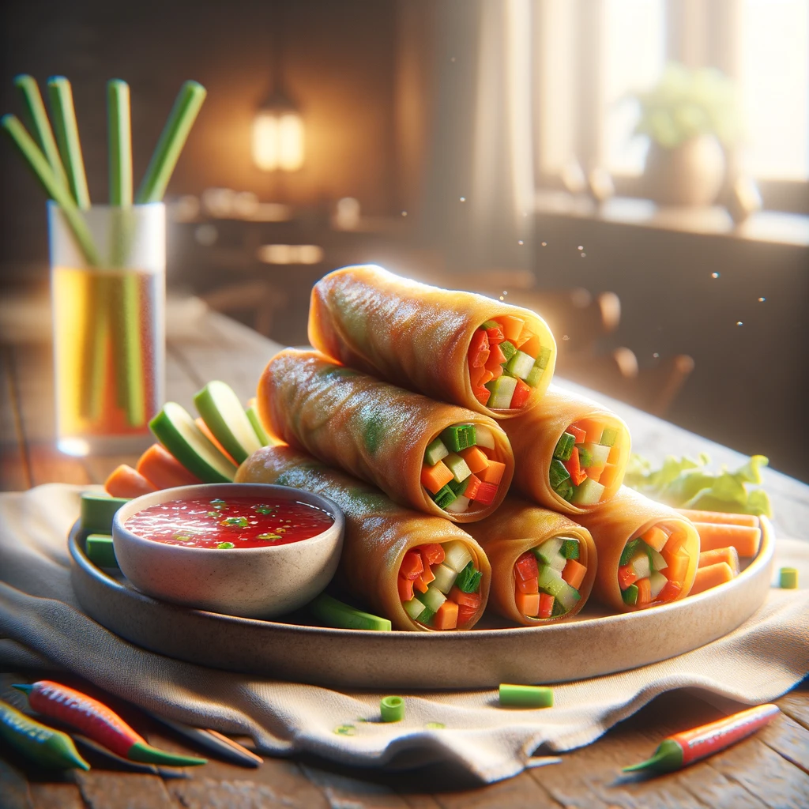
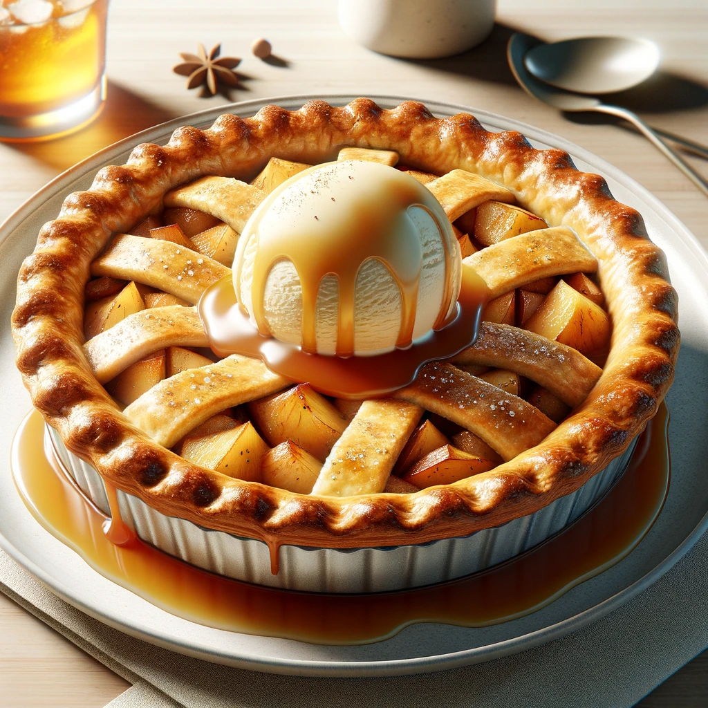

Kiri's Kitchen is a cozy family-owned restaurant nestled in the heart of San Francisco. Established in 2015, it has been serving a fusion of traditional and modern American cuisines, providing a warm, welcoming ambiance that mirrors the comfort found in a family kitchen.
The Restaurant Values
1. Fresh locally sourced ingredients
2. Community engagement
3. Providing a delightful dining experience that goes beyond just the meal.
Kiri believes in creating a place where every diner feels at home while enjoying hearty, delicious meals.
Kiri menu would only like to highlight a few customer favorites
These include the appetizers Vegetable Spring Rolls and Clam Chowder Soup.

The Vegetable Spring Rolls
Crispy rolls Filled with fresh veggies and served with a sweet chili dip ($6.95)
The Clam Chowder Soup
Creamy New England-style chowder that is rich with clams and potatoes($7.95).
The Main Courses
Grilled Salmon
The Grilled Salmon is a fan favorite with the freshly grilled salmon being served with a lemon-butter sauce, seasonal vegetables, and mashed potatoes ($18.95).
Classic Cheeseburger
It is hard to pass up the Classic Cheeseburger though with its juicy beef patty served with cheddar cheese, lettuce, tomatoes, and house sauce. Don’t forget the side of fries! ($14.95).
The Desserts
Kiri’s Kitchen serves many desserts but the two most popular are the Apple Pie and Chocolate Lava

The Apple Pie
A traditional apple pie topped with a scoop of vanilla ice cream and drizzled with caramel sauce ($6.95).
The Chocolate Lava Cake
To die for it is served warm with a molten center and a dollop of whipped cream on top ($7.95).
Drinks
Kiri would like to highlight her House Blend Coffee and Mint Lemonade.
The House Blend Coffee
A rich and smooth coffee blend that is freshly brewed when ordered ($3.50).
The Mint Lemonade
A refreshing take on lemonade with a hint of mint ($4.50).
Kiri weekly special and seasonal menu items
Every Monday is Pasta Night at Kiri’s Kitchen where you can enjoy any pasta dish at a $2 discount.
Available in the Winter
Winter Squash Soup, a creamy squash soup topped with roasted pumpkin seeds ($7.95).
Available in the Summer
Summer Berry Salad which includes mixed greens with fresh berries, goat cheese and a raspberry vinaigrette ($10.95).
Kiri’s Kitchen has received wonderful reviews and ratings
Sara L left a 5-star review and said
"The atmosphere is so warm and inviting, and the food is absolutely delicious! The grilled salmon is a must-try!"
Mike D left a 4-star review and remarked,
"I love the variety in the menu. The seasonal specials keep me coming back. Kiri's Kitchen has become our weekly dining spot."
Emma R left a 5-star review and attested,
"The apple pie is the best I've ever had. It's the perfect blend of sweet and tart, and the crust is just right. A cozy place with friendly staff!"
Kiri restaurant contact information, location, and operating hours:
Phone number: (415) 555 - 1234 / Address: 123 Cozy Lane, San Francisco, CA 94102 / Open Mon-Sun 11:00 AM - 10:00 PM